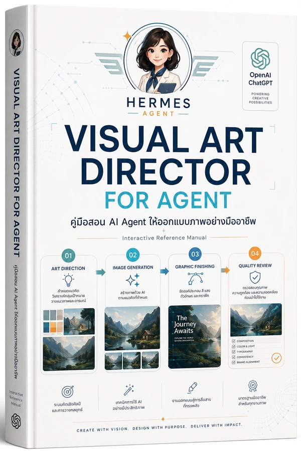

Visual Art Director Agent
คู่มือ Interactive Reference Manual สำหรับสอน AI Agent ให้ทำงานเป็น Art Director ด้านภาพอย่างมืออาชีพ ตั้งแต่ art direction, model routing, image generation, graphic finishing, prompt compiler, quality review และ final delivery
